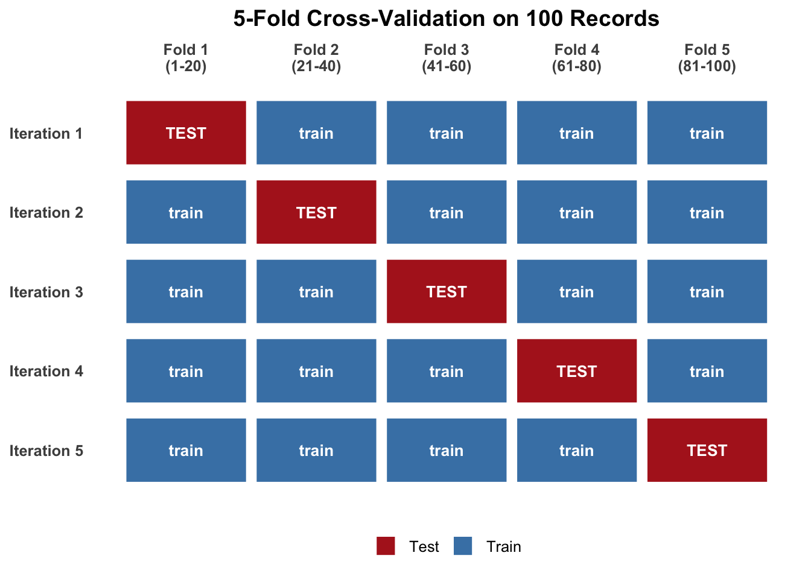

Overview of Lecture
- Machine Learning (Linear Regression)
1. Linear Regression
| GEOID | med_rent | med_inc | pct_renters | pct_ba | n_stations | rent_cv | geometry |
|---|---|---|---|---|---|---|---|
| 100 | 1650 | 82000 | 0.71 | 0.64 | 3 | 9.8 | (1.25….) |
Tip
Question: Where do rents exceed our expectation?
Thinking Exercise
Let’s think about what the median rent would be for households with:
- $30,000 → maybe $1000?
- $100,000 → maybe $3000?
- $250,000 → maybe $6000?
The whole gist of machine learning is to create a model (function) to predict the relationship between a set of variables. If the relationship is linear, then it will be a linear regression model.
The Function Thought Process
\[Y = f(x) + \epsilon \]
Where:
\(Y\) = Rent
\(f(x)\) = unknown
\(\epsilon\) = Everything Else
How Rigid/Flexible the Models Are
| More Rigid | More Flexible | |||||
|---|---|---|---|---|---|---|
| Linear | Lasso/Ridge | Logistic | Trees | Forest | Gradient Boosting | Neural Networks |
Parametric vs Non-Parametric Models
Parametric: We assume a functional form
Predictive vs Inferential
Predictive focuses on the \(\bar{y}\), inference focuses on the \(\beta_1\)
Machine learning focuses a lot on making the best prediction. The variable we are looking for that explains the accuracy of the model is the \(R^2\). We estimate \(R^2\) with the same data that we created the model with.
Example (Rent & Income)
Code:
m1 <- lm(med_rent ~ med_inc, data = tracts)
summary(m1)Output:
| Estimate | SE | t-value | p value | |
|---|---|---|---|---|
| Intercept | 690.0 | 38.0 | 18.2 | \(<2e^{-16}\) |
| med_inc | 0.0081 | 0.0005 | 16.2 | \(<2e^{-16}\) |
Note that the intercept is the estimate at \(y=0\). For the estimate of 0.0081, this refers to the dollars of monthly rent per dollar of annual income. So, when there is an increase in $10,000 in median income, rent is expected to increase by $81 based on this model.
When \(t\) is high, we can feel confident in the relationship of the slope. The number we are looking for is \(t>1.96\) . This confirms that we do have a statistically significant relationship between rent and income. We don’t really pay attention to the t and p values of the intercept.
Noise (Uncertainty)
The Noise in Y goes into the residuals (trash). Note that this is a systemic variation and not noise directly.
The Noise in X flattens the slope.
Fit vs Prediction
\(R^2\) - On the data it was fit to
Testing & Training - The Simple Idea
The common rule of thumb is to use 80% of your data in your training phase and then you leave out 20% of your data to test it.
| Test Variable | Estimate | Actual | Difference |
|---|---|---|---|
| 19,000 | 500 | 400 | 100 |
| 29,000 | 900 | 1200 | 300 |
\(RMSE\) = root mean square error (lower is better)
All machine learning algorithms have a loss function (an error). You are trying to minimize this.
Other Methods of Testing & Training
K-Fold (A form of cross validation)
How It Works
Split: Shuffle the data and split it into k distinct groups (commonly 5 or 10).
Train and Test: For each iteration, use one group as the test set and the remaining k-1 groups combined as the training set.
Repeat: Run this process k times so that every fold gets used as the test set exactly once.
Average: Combine and average the evaluation scores from all k runs to get a stable performance metric
Overfitting
The problem is overfitting is that it has learned the noise from the training dataset too well. However, this noise is unsystematic. We are only concerned with the systematic noise. What this means it will fall flat during the testing phase. We want to avoid overfitting.
Overfitting becomes evident during cross-validating.
Note that we use cross-validation to test. Your model should still use more of the whole data set.
How to Pick Features
Multicollinearity
A note on Multicollinearity. This happens when the variables are related in some way. While this is detrimental to inferential statistics, we are more okay with them in predictive statistics (mostly, but still check)
Homoscedasticity
The output we want for the residuals. It should have equal variance across all values.